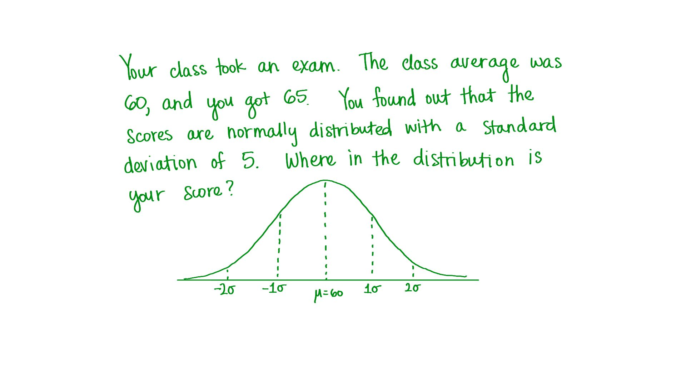

习题集 4: 差异性
Back to Home
01. 1. 优达学城员工的 Facebook 好友数 - 均值
02. 2. 优达学城员工的 Facebook 好友数 - 平均偏差
03. 3. 优达学城员工的 Facebook 好友数 - 差值平方和
04. 4. 优达学城员工的 Facebook 好友数 - 方差
05. 5. 优达学城员工的 Facebook 好友数 - 标准偏差
06. 6. 优达学城员工的 Facebook 好友数 - 平均值 +/- 标准偏差
07. 7. 优达学城员工的 Facebook 好友数 - 比例
08. 8. 优达学城员工的 Facebook 好友数 - 样本标准偏差
09. 9. 课堂测验
10. 10. 你的分数位于哪里？(sd = 5)
11. 11. 你的分数位于哪里？(sd = 2.5)
12. 12. 你的分数位于哪里？(sd = 10)
13. 13. BBC 样本分数 (平均偏差)
14. 14. BBC 样本分数 (差异性)
Back to Home
10. 10. 你的分数位于哪里？(sd = 5)
你的分数位于哪里？(sd = 5)
Start Quiz:

INSTRUCTOR NOTE:
在一次班级测验中平均分是60分，你得了65分。你发现全班分数呈正态分布，标准偏差为5。你的分数在这个分布图的哪个位置？
Next Concept